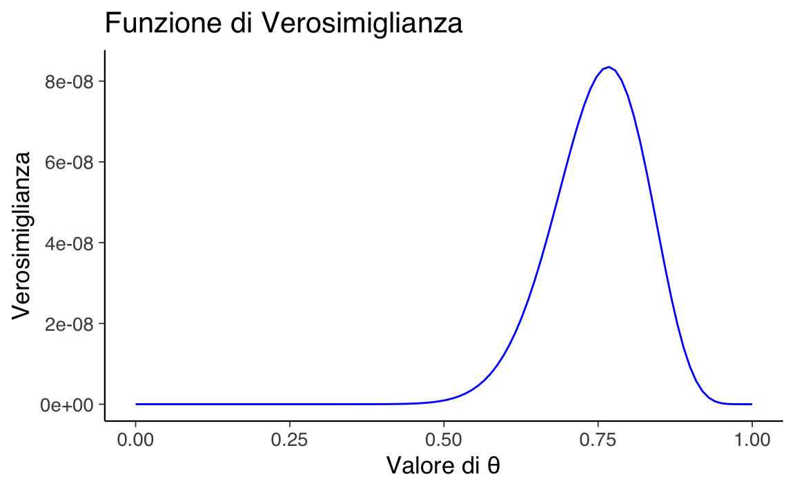
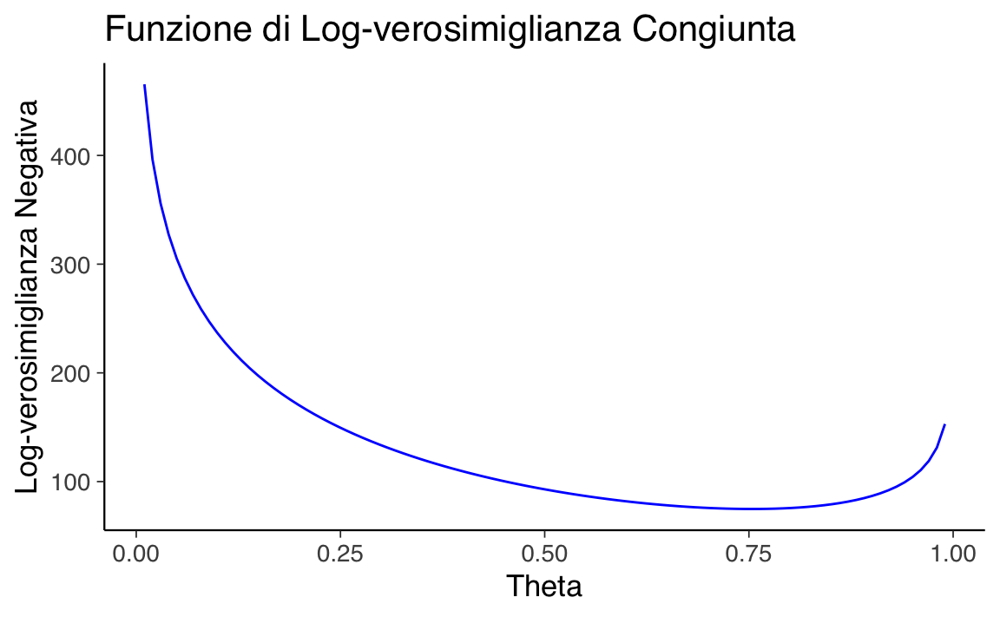
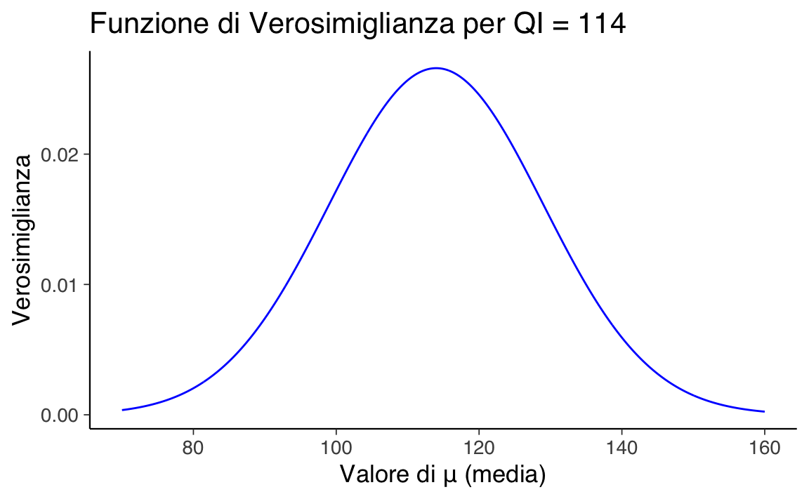
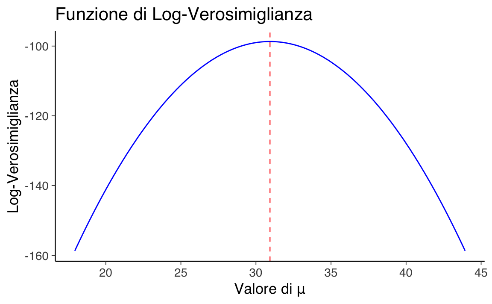

here::here("code", "_common.R") |>
source()
# Load packages
if (!requireNamespace("pacman")) install.packages("pacman")
pacman::p_load(mice, labelled, haven, pointblank)37 La verosimiglianza
Prerequisiti
- Leggere il capitolo Estimation (Schervish & DeGroot, 2014).
Concetti e Competenze Chiave
- Comprendere il concetto di verosimiglianza e il suo ruolo nella dei parametri.
- Generare grafici della funzione di verosimiglianza binomiale.
- Generare grafici della funzione di verosimiglianza del modello gaussiano.
- Interpretare i grafici della funzione di verosimiglianza.
- Comprendere il concetto di stima di massima verosimiglianza.
Preparazione del Notebook
37.1 Introduzione
I ricercatori utilizzano modelli con diverse strutture funzionali per descrivere e prevedere il comportamento dei dati. La scelta del modello più adatto si basa sul confronto tra le previsioni teoriche e i dati osservati: il modello che produce previsioni più vicine ai dati osservati viene considerato il migliore per rappresentare il fenomeno studiato. In questo processo, la funzione di verosimiglianza svolge un ruolo centrale, quantificando la probabilità che i dati osservati siano compatibili con un modello specifico e i suoi parametri.
La funzione di verosimiglianza rappresenta il meccanismo generativo dei dati, collegando i parametri del modello alle osservazioni empiriche. Tuttavia, essa non costituisce da sola un modello scientifico completo. Un modello scientifico include infatti altri elementi, come i priori (in un approccio bayesiano), che rappresentano le ipotesi iniziali sui parametri prima dell’osservazione dei dati, e la modellazione dell’errore di misurazione, che tiene conto delle imperfezioni nei dati raccolti.
In un approccio bayesiano, i priori si combinano con la verosimiglianza per generare la distribuzione a posteriori, che aggiorna le conoscenze sui parametri alla luce dei dati osservati. Questo passaggio è cruciale per il confronto tra modelli, poiché i priori possono influenzare significativamente le conclusioni.
Un modello scientifico può anche includere la modellazione dell’errore di misurazione per spiegare le discrepanze tra i dati osservati e il processo reale. Questo aspetto è fondamentale per garantire che il modello sia in grado di catturare sia le osservazioni che le loro imprecisioni.
In sintesi, la funzione di verosimiglianza descrive come i dati potrebbero essere generati da un modello dato un insieme di parametri, ma un modello scientifico completo include ulteriori componenti, come i priori e la modellazione dell’errore, per rendere la rappresentazione del fenomeno più accurata. Questo capitolo si propone di approfondire il concetto di verosimiglianza e il suo ruolo nell’inferenza statistica.
37.2 Il Principio della Verosimiglianza e la sua Formalizzazione
La funzione di verosimiglianza è strettamente collegata alla funzione di densità (o massa) di probabilità, ma i due concetti hanno interpretazioni distinte:
- La funzione di densità di probabilità descrive la probabilità di osservare un determinato insieme di dati, assumendo che i parametri siano noti e fissi.
- La funzione di verosimiglianza considera i dati osservati come fissi e varia i parametri, valutando quanto ciascun valore dei parametri spieghi i dati.
La relazione tra queste due funzioni può essere formalizzata come segue:
\[ L(\theta \mid y) \propto p(y \mid \theta), \]
dove \(L(\theta \mid y)\) è la verosimiglianza dei parametri \(\theta\) dati i dati \(y\), e \(p(y \mid \theta)\) rappresenta la probabilità di osservare i dati \(y\) dato un certo \(\theta\).
37.3 Verosimiglianza Binomiale
Consideriamo un esempio pratico: il lancio di una moneta. Supponiamo di osservare 23 teste su 30 lanci. La probabilità di osservare esattamente questo risultato, data una probabilità di successo \(\theta\), può essere calcolata utilizzando la funzione di massa della distribuzione binomiale:
\[ P(Y = y) = \binom{n}{y} \theta^y (1 - \theta)^{n - y}, \]
dove:
- \(n\) è il numero totale di lanci,
- \(y\) è il numero di successi osservati,
- \(\theta\) è la probabilità di successo per ogni lancio.
La funzione di verosimiglianza, invece, si concentra sull’identificazione dei valori di \(\theta\) che meglio spiegano i dati osservati. Per la distribuzione binomiale, la funzione di verosimiglianza si scrive come:
\[ \mathcal{L}(\theta \mid y) = \theta^y (1 - \theta)^{n - y}. \]
Qui, il coefficiente binomiale \(\binom{n}{y}\) può essere omesso perché non dipende da \(\theta\) e quindi non influisce sulla stima del parametro.
37.3.1 Verosimiglianza per il Lancio di una Moneta
Supponiamo che:
- \(n = 30\) (numero di lanci),
- \(y = 23\) (numero di teste osservate).
La funzione di verosimiglianza diventa:
\[ \mathcal{L}(\theta \mid y) = \theta^{23} (1 - \theta)^7. \]
Questo ci permette di calcolare la verosimiglianza per diversi valori di \(\theta\), determinando quale valore rende i dati osservati più plausibili. Ad esempio, possiamo simulare 100 valori equidistanti di \(\theta\) nell’intervallo ([0, 1]) e calcolare la funzione di verosimiglianza per ciascun valore.
In R, possiamo calcolare la funzione di verosimiglianza per \(n = 30\), \(y = 23\), e una griglia di valori di \(\theta\) come segue:
# Parametri
n <- 30
y <- 23
# Definizione dei valori di theta
theta <- seq(0, 1, length.out = 100)
# Calcolo della verosimiglianza
likelihood <- theta^y * (1 - theta)^(n - y)
# Visualizzazione della funzione di verosimiglianza
ggplot(
data.frame(theta, likelihood),
aes(x = theta, y = likelihood)) +
geom_line(color = "blue") +
labs(
title = "Funzione di Verosimiglianza",
x = "Valore di θ",
y = "Verosimiglianza"
) 
37.3.2 Interpretazione della Verosimiglianza
- Valore di \(\theta\): La funzione di verosimiglianza indica quali valori di \(\theta\) sono più plausibili dati i dati osservati.
- Stima di Massima Verosimiglianza (MLE): Il valore di \(\theta\) che massimizza la funzione di verosimiglianza è detto stima di massima verosimiglianza. Nel nostro esempio, possiamo individuare questo valore esplorando numericamente i punti di massimo della curva.
In pratica, per identificare numericamente il valore ottimale di \(\theta\), si può utilizzare un approccio computazionale che identifica il massimo della verosimiglianza.
Spiegazione:
-
dbinom(y, size = n, prob = theta)calcola la probabilità binomiale per ogni valore ditheta. -
which.max(l)restituisce l’indice del valore massimo nella distribuzione di probabilità calcolata. -
theta[max_index]seleziona il valore dithetacorrispondente all’indice massimo.
Questo approccio illustra come la funzione di verosimiglianza aiuti a stimare parametri incogniti e a valutare la plausibilità relativa di diversi modelli statistici, basandosi esclusivamente sui dati osservati.
37.4 La Funzione di Log-Verosimiglianza
La log-verosimiglianza è il logaritmo naturale della funzione di verosimiglianza:
\[ \ell(\theta) = \log \mathcal{L}(\theta \mid y). \]
Questa trasformazione è utile per semplificare i calcoli e migliorare la stabilità numerica, specialmente con dataset di grandi dimensioni.
Esempio grafico per i valori di log-verosimiglianza:
# Parametri
n <- 30
r <- 23
# Genera la sequenza per theta
theta <- seq(0, 1, length.out = 100)
# Calcolo della log-verosimiglianza
log_likelihood <- dbinom(r, size = n, prob = theta, log = TRUE)
# Creazione del grafico
plot(
theta, log_likelihood, type = "l",
main = "Funzione di log-verosimiglianza",
xlab = "Valore della variabile casuale theta [0, 1]",
ylab = "Log-verosimiglianza"
)Il massimo della log-verosimiglianza replica il risultato trovato in precedenza con la funzione di verosimiglianza.
37.5 Verosimiglianza Congiunta
Nell’inferenza statistica basata sulla verosimiglianza, è comune incontrare situazioni in cui si dispone di più osservazioni indipendenti, tutte generate dallo stesso processo probabilistico. Ad esempio, raccogliamo un insieme di dati $ Y = [y_1, y_2, , y_n] $, dove ciascun valore è osservato indipendentemente e segue la stessa distribuzione binomiale. Questo scenario, noto come condizione di indipendenza e identica distribuzione (IID), è frequente nelle applicazioni pratiche.
37.5.1 Calcolo della Verosimiglianza Congiunta
Per considerare congiuntamente tutte le osservazioni, calcoliamo la probabilità congiunta di osservare $ y_1, y_2, , y_n $, data una comune probabilità di successo \(\theta\). Grazie all’indipendenza delle osservazioni, questa probabilità si esprime come il prodotto delle probabilità individuali:
\[ p(y_1, y_2, \ldots, y_n \mid \theta) = \prod_{i=1}^{n} p(y_i \mid \theta) = \prod_{i=1}^{n} \text{Binomiale}(y_i \mid \theta). \]
La verosimiglianza congiunta è quindi:
\[ \mathcal{L}(\theta \mid Y) = \prod_{i=1}^{n} \mathcal{L}(\theta \mid y_i) = \prod_{i=1}^{n} p(y_i \mid \theta). \]
Questa funzione misura la plausibilità complessiva del parametro \(\theta\) rispetto all’intero insieme di dati \(Y\). Il valore di \(\theta\) che massimizza la verosimiglianza congiunta è noto come stimatore di massima verosimiglianza (MLE) e rappresenta il parametro che rende i dati osservati più plausibili.
37.5.2 Log-Verosimiglianza Congiunta
Poiché il prodotto delle probabilità può diventare numericamente instabile, lavoriamo spesso con la log-verosimiglianza, che trasforma il prodotto in una somma:
\[ \log \mathcal{L}(\theta \mid Y) = \sum_{i=1}^{n} \log p(y_i \mid \theta). \]
In un esempio pratico con dati raggruppati, consideriamo quattro gruppi di osservazioni binomiali indipendenti:
- Gruppo 1: 30 prove con 23 successi
- Gruppo 2: 28 prove con 20 successi
- Gruppo 3: 40 prove con 29 successi
- Gruppo 4: 36 prove con 29 successi
La log-verosimiglianza congiunta è:
\[ \log \mathcal{L}(\theta) = \sum_{i=1}^{4} \left[ y_i \log(\theta) + (n_i - y_i) \log(1 - \theta) \right], \]
dove $ n_i $ e $ y_i $ rappresentano rispettivamente il numero di prove e di successi nel gruppo \(i\)-esimo.
37.5.3 Implementazione in R
Per calcolare la log-verosimiglianza congiunta, definiamo una funzione che accetta \(\theta\) e i dati dei gruppi:
log_verosimiglianza_congiunta <- function(theta, dati) {
# Evita valori problematici per log(0)
theta <- pmax(pmin(theta, 1 - 1e-10), 1e-10)
# Calcolo della log-verosimiglianza
log_likelihood <- 0
for (gruppo in dati) {
n <- gruppo[1]
y <- gruppo[2]
log_likelihood <- log_likelihood + y * log(theta) + (n - y) * log(1 - theta)
}
return(-log_likelihood) # Negativo per ottimizzazione
}I dati dei gruppi sono rappresentati come segue:
37.5.4 Ottimizzazione per trovare \(\theta\)
Utilizziamo l’algoritmo di ottimizzazione optim per stimare il valore di \(\theta\) che massimizza la log-verosimiglianza:
result <- optim(
par = 0.5, # Valore iniziale
fn = log_verosimiglianza_congiunta,
dati = dati_gruppi, # Dati
method = "L-BFGS-B", # Metodo con vincoli
lower = 0, # Limite inferiore
upper = 1 # Limite superiore
)
# Valore ottimale di theta
result$par
#> [1] 0.75437.5.5 Visualizzazione della log-verosimiglianza
Calcoliamo e tracciamo la log-verosimiglianza negativa per un intervallo di valori di \(\theta\):
theta_values <- seq(0.01, 0.99, length.out = 100)
log_likelihood_values <- sapply(theta_values, function(theta) {
log_verosimiglianza_congiunta(theta, dati_gruppi)
})
ggplot(
data.frame(theta = theta_values, log_likelihood = log_likelihood_values),
aes(x = theta, y = log_likelihood)) +
geom_line(color = "blue") +
labs(
title = "Funzione di Log-verosimiglianza Congiunta",
x = "Theta",
y = "Log-verosimiglianza Negativa"
) 
In conclusione, l’analisi della verosimiglianza congiunta consente di stimare con precisione il parametro \(\theta\) considerando tutte le osservazioni contemporaneamente. La log-verosimiglianza, grazie alla sua stabilità numerica e alla semplicità di calcolo, è uno strumento potente per l’inferenza statistica. Utilizzando tecniche di ottimizzazione, possiamo identificare il valore di \(\theta\) che meglio spiega i dati osservati, ottenendo stime affidabili anche in contesti complessi.
37.6 La Verosimiglianza Marginale
La verosimiglianza marginale è un concetto fondamentale nell’inferenza bayesiana. Essa permette di calcolare la probabilità complessiva di osservare un determinato risultato, tenendo conto di tutte le possibili incertezze sui parametri del modello. Questo è particolarmente rilevante quando il parametro di interesse, \(\theta\), non è considerato un valore fisso, ma è descritto da una distribuzione di probabilità.
In pratica, la verosimiglianza marginale valuta la compatibilità dei dati con il modello, integrando su tutti i possibili valori di \(\theta\), ciascuno pesato dalla sua probabilità a priori.
37.6.1 Caso con Parametri Discreti
Consideriamo un esempio semplice in cui \(\theta\) può assumere un insieme discreto di valori. Ad esempio, in una sequenza di prove binomiali con \(k = 7\) successi su \(n = 10\) prove, e con \(\theta \in \{0.1, 0.5, 0.9\}\), la verosimiglianza marginale è calcolata come:
\[ p(k = 7 \mid n = 10) = \sum_{\theta \in \{0.1, 0.5, 0.9\}} \binom{10}{7} \theta^7 (1 - \theta)^3 p(\theta), \]
dove \(p(\theta)\) rappresenta la probabilità a priori associata a ciascun valore discreto di \(\theta\). In questo caso, la verosimiglianza marginale è la somma delle probabilità di osservare i dati, pesata dalla probabilità a priori di ciascun valore di \(\theta\).
37.6.2 Caso con Parametri Continui
Nella maggior parte delle applicazioni, \(\theta\) varia continuamente all’interno di un intervallo, ad esempio \([0, 1]\) per un parametro binomiale. In tal caso, la verosimiglianza marginale è calcolata mediante un’integrazione:
\[ p(k = 7 \mid n = 10) = \int_{0}^{1} \binom{10}{7} \theta^7 (1 - \theta)^3 p(\theta) \, d\theta, \]
dove \(p(\theta)\) è la densità a priori di \(\theta\). Questa formula combina le probabilità condizionali dei dati dati \(\theta\) con le probabilità a priori, integrando su tutti i possibili valori di \(\theta\).
37.6.3 Calcolo Numerico della Verosimiglianza Marginale
Per calcolare la verosimiglianza marginale con \(\theta\) continuo, possiamo utilizzare l’integrazione numerica. In R, il pacchetto stats offre strumenti utili come la funzione integrate. Ecco un esempio concreto:
# Definizione della funzione di verosimiglianza
likelihood <- function(theta) {
dbinom(x = 7, size = 10, prob = theta)
}
# Calcolo della verosimiglianza marginale con integrazione numerica
marginal_likelihood <- integrate(likelihood, lower = 0, upper = 1)$value
# Stampa del risultato
cat("La verosimiglianza marginale è:", marginal_likelihood, "\n")
#> La verosimiglianza marginale è: 0.090937.6.4 Interpretazione della Verosimiglianza Marginale
La verosimiglianza marginale rappresenta la capacità complessiva del modello di spiegare i dati, tenendo conto dell’incertezza sui parametri. Dal punto di vista geometrico, può essere interpretata come l’area sottesa alla funzione di verosimiglianza ponderata dalla distribuzione a priori di \(\theta\).
Tuttavia, è importante chiarire che la verosimiglianza marginale non è una probabilità dei dati dato un valore specifico di \(\theta\). Piuttosto, essa considera tutte le possibili incertezze sui parametri, fornendo una misura complessiva della compatibilità del modello con i dati.
37.6.5 Ruolo nell’Inferenza Bayesiana
La verosimiglianza marginale assume un ruolo chiave nell’inferenza bayesiana come fattore di normalizzazione nella formula di Bayes:
\[ p(\theta \mid D) = \frac{p(D \mid \theta) p(\theta)}{p(D)}, \]
dove \(p(D)\), ossia la verosimiglianza marginale, garantisce che la distribuzione posteriore \(p(\theta \mid D)\) sia una distribuzione di probabilità valida, con un’area totale pari a 1.
In conclusione, la verosimiglianza marginale è uno strumento fondamentale per valutare il modello nel suo complesso, integrando informazioni sui parametri e sulla loro incertezza. In particolare:
- Per parametri discreti, si calcola sommando le probabilità di ciascun valore di \(\theta\), ponderate dalla loro probabilità a priori.
- Per parametri continui, si utilizza l’integrazione per ottenere una misura globale della compatibilità del modello con i dati.
Questa misura non solo consente di confrontare modelli diversi, ma garantisce anche la validità della distribuzione a posteriori nell’inferenza bayesiana. Grazie a strumenti computazionali, possiamo calcolare la verosimiglianza marginale anche in situazioni complesse, fornendo una base solida per analisi statistiche rigorose e flessibili.
37.7 Modello Gaussiano e Verosimiglianza
In questa sezione analizziamo il caso di una distribuzione gaussiana per calcolare la funzione di verosimiglianza. Inizieremo con una singola osservazione e successivamente estenderemo l’analisi a un insieme di osservazioni indipendenti e identicamente distribuite (IID).
37.7.1 Caso di una Singola Osservazione
Consideriamo una singola osservazione $ y $, ad esempio il Quoziente Intellettivo (QI) di un individuo, che supponiamo seguire una distribuzione normale. La funzione di verosimiglianza per $ y $ esprime la plausibilità di diversi valori del parametro \(\mu\) (media), dato il valore osservato, assumendo che la deviazione standard \(\sigma\) sia nota.
37.7.1.1 Definizione della Verosimiglianza
La funzione di densità di probabilità gaussiana è definita come:
\[ f(y \mid \mu, \sigma) = \frac{1}{\sigma\sqrt{2\pi}} \exp\left(-\frac{(y-\mu)^2}{2\sigma^2}\right), \]
dove \(y\) è il valore osservato, \(\mu\) è la media e \(\sigma\) è la deviazione standard.
37.7.1.2 Esempio con R
Supponiamo di osservare un valore $ y = 114 $ e di assumere che \(\sigma = 15\). Esploriamo i valori di \(\mu\) in un intervallo compreso tra 70 e 160 per determinare quale valore massimizza la verosimiglianza.
# Parametri iniziali
y_obs <- 114
sigma <- 15
mu_values <- seq(70, 160, length.out = 1000)
# Calcolo della funzione di verosimiglianza
likelihood <- dnorm(y_obs, mean = mu_values, sd = sigma)
# Visualizzazione della funzione di verosimiglianza
library(ggplot2)
ggplot(data.frame(mu = mu_values, likelihood = likelihood), aes(x = mu, y = likelihood)) +
geom_line(color = "blue") +
labs(
title = "Funzione di Verosimiglianza per QI = 114",
x = "Valore di μ (media)",
y = "Verosimiglianza"
)
37.7.1.3 Calcolo del Valore Ottimale
Per determinare il valore di \(\mu\) che massimizza la verosimiglianza, individuiamo il massimo della curva.
Il valore di \(\mu\) che massimizza la verosimiglianza è $ = 114 $, coincidente con il valore osservato.
37.7.2 Log-Verosimiglianza
In alternativa, possiamo lavorare con la log-verosimiglianza, una trasformazione utile per semplificare i calcoli numerici e migliorare la stabilità computazionale:
\[ \log L(\mu \mid y, \sigma) = -\frac{1}{2} \log(2\pi) - \log(\sigma) - \frac{(y - \mu)^2}{2\sigma^2}. \]
Questa funzione è equivalente alla funzione di verosimiglianza per determinare il valore di \(\mu\) che meglio si adatta ai dati.
37.7.2.1 Calcolo della Log-Verosimiglianza con R
# Funzione di log-verosimiglianza negativa
negative_log_likelihood <- function(mu, y, sigma) {
0.5 * log(2 * pi) + log(sigma) + ((y - mu)^2) / (2 * sigma^2)
}
# Ottimizzazione per trovare il massimo della log-verosimiglianza
result <- optim(
par = 100, # Valore iniziale per μ
fn = negative_log_likelihood,
y = y_obs,
sigma = sigma,
method = "L-BFGS-B",
lower = 70,
upper = 160
)
# Risultato dell'ottimizzazione
mu_max_loglik <- result$par
cat("Il valore ottimale di μ basato sulla log-verosimiglianza è:", mu_max_loglik, "\n")
#> Il valore ottimale di μ basato sulla log-verosimiglianza è: 114Il valore di \(\mu\) che massimizza la log-verosimiglianza è $ = 114 $, confermando che, in presenza di una singola osservazione, il valore ottimale coincide con l’osservazione stessa.
In conclusione, l’analisi della funzione di verosimiglianza nel caso gaussiano mostra che:
- La funzione di verosimiglianza rappresenta la plausibilità dei parametri del modello dato il valore osservato.
- La log-verosimiglianza è una trasformazione utile per calcoli più stabili e semplificati.
- Nel caso di una singola osservazione e deviazione standard nota, il valore di \(\mu\) che massimizza la verosimiglianza coincide con il valore osservato \(y\).
37.7.3 Campione Indipendente di Osservazioni da una Distribuzione Normale
Consideriamo un campione composto da \(n\) osservazioni indipendenti e identicamente distribuite (IID), ognuna derivante da una distribuzione normale con media \(\mu\) e deviazione standard \(\sigma\). La distribuzione è rappresentata da:
\[ X \sim N(\mu, \sigma^2), \]
dove \(y_i\) indica ogni osservazione del campione.
La densità di probabilità congiunta per il campione è il prodotto delle densità delle singole osservazioni:
\[ p(y_1, y_2, \ldots, y_n \mid \mu, \sigma) = \prod_{i=1}^n p(y_i \mid \mu, \sigma). \]
Di conseguenza, la funzione di verosimiglianza è:
\[ \mathcal{L}(\mu, \sigma \mid y) = \prod_{i=1}^n \frac{1}{\sigma\sqrt{2\pi}} \exp \left( -\frac{(y_i - \mu)^2}{2\sigma^2} \right). \]
Per semplificare i calcoli, si considera il logaritmo della funzione di verosimiglianza:
\[ \log \mathcal{L}(\mu, \sigma \mid y) = -\frac{n}{2} \log(2\pi) - n \log(\sigma) - \frac{1}{2\sigma^2} \sum_{i=1}^n (y_i - \mu)^2. \]
37.7.3.1 Esempio Pratico
Supponiamo di misurare i punteggi del BDI-II su un campione di 30 partecipanti. I dati sono i seguenti:
# Dati osservati
y <- c(
26, 35, 30, 25, 44, 30, 33, 43, 22, 43,
24, 19, 39, 31, 25, 28, 35, 30, 26, 31,
41, 36, 26, 35, 33, 28, 27, 34, 27, 22
)Assumiamo che la deviazione standard \(\sigma\) sia nota e pari alla deviazione standard campionaria (\(\sigma = 6.50\)).
Definiamo una funzione per calcolare la log-verosimiglianza dato un valore di \(\mu\):
Definiamo un intervallo per \(\mu\), centrato sulla media campionaria:
Tracciamo la funzione di log-verosimiglianza per i diversi valori di \(\mu\):
ggplot(
data.frame(mu = mu_range, log_likelihood = log_lik_values),
aes(x = mu, y = log_likelihood)) +
geom_line(color = "blue") +
labs(
title = "Funzione di Log-Verosimiglianza",
x = "Valore di μ",
y = "Log-Verosimiglianza"
) +
geom_vline(xintercept = mean(y), linetype = "dashed", color = "red", alpha = 0.7) 
Utilizziamo l’ottimizzazione numerica per trovare il valore di \(\mu\) che massimizza la log-verosimiglianza:
# Definizione della funzione negativa per l'ottimizzazione
negative_log_likelihood <- function(mu, y, sigma) {
-log_likelihood(mu, y, sigma)
}
# Ottimizzazione
result <- optim(
par = mean(y), # Punto di partenza
fn = negative_log_likelihood,
y = y,
sigma = sigma,
method = "L-BFGS-B",
lower = min(mu_range),
upper = max(mu_range)
)
# Risultato
mu_optimal <- result$par
cat("Il valore ottimale di μ è:", mu_optimal, "\n")
#> Il valore ottimale di μ è: 30.9Interpretazione dei risultati:
- Stima di Massima Verosimiglianza (MLE): La media campionaria \(\bar{y}\) rappresenta la stima di massima verosimiglianza (MLE) per \(\mu\). Questo risultato è coerente con la proprietà della distribuzione normale.
- Curva della Log-Verosimiglianza: La curva mostra la “plausibilità relativa” dei diversi valori di \(\mu\) alla luce dei dati osservati.
- Ottimizzazione Numerica: Il valore di \(\mu\) che massimizza la funzione di log-verosimiglianza è il valore che meglio spiega i dati osservati.
In conclusione, la log-verosimiglianza è uno strumento essenziale per stimare i parametri di una distribuzione normale:
- La stima di massima verosimiglianza per \(\mu\) coincide con la media campionaria.
- Visualizzare la log-verosimiglianza aiuta a comprendere la plausibilità dei parametri.
- L’ottimizzazione numerica fornisce una soluzione precisa ed efficiente per trovare il massimo della log-verosimiglianza.
37.8 Riflessioni Conclusive
La funzione di verosimiglianza rappresenta un elemento cruciale che collega i dati osservati ai parametri di un modello statistico. Essa fornisce una misura della plausibilità dei dati in relazione a diversi valori possibili dei parametri del modello. La strutturazione di una funzione di verosimiglianza richiede la considerazione di tre componenti fondamentali: il modello statistico che si presume abbia generato i dati, l’insieme di valori possibili per i parametri di tale modello e le osservazioni empiriche che effettivamente abbiamo a disposizione.
La funzione di verosimiglianza è centrale nella pratica dell’inferenza statistica. Essa ci permette di quantificare quanto bene differenti set di parametri potrebbero aver generato i dati osservati. Questo è fondamentale sia per la selezione del modello che per la stima dei parametri, e pertanto è indispensabile per un’analisi dati rigorosa e per un’interpretazione accurata dei risultati.
Un’applicazione pratica e illustrativa dei principi esposti in questo capitolo è fornita nella sezione sul modello Rescorla-Wagner, che è un esempio di come la teoria della verosimiglianza possa essere applicata per affrontare questioni empiriche in psicologia.
In sintesi, la comprensione e l’applicazione appropriata della funzione di verosimiglianza sono passaggi essenziali nel processo di analisi dati. Essa costituisce uno strumento indispensabile per chi è impegnato nella ricerca empirica e nell’interpretazione di dati complessi.
37.9 Esercizi
Esercizio 37.1 Spiega ciascuno dei concetti seguenti con una frase:
- probabilità.
- funzione di massa di probabilità.
- funzione di densità di probabilità.
- distribuzione di probabilità.
- distribuzione di probabilità discreta.
- distribuzione di probabilità continua.
- funzione di distribuzione cumulativa (cdf).
- verosimiglianza
All’esame ti verrà chiesto di:
- Calcolare la funzione di verosimiglianza binomiale e riportare il valore della funzione in corrispondenza di specifici valori \(\theta\).
- Calcolare la funzione di verosimiglianza del modello gaussiano, per \(\sigma\) noto, e riportare il valore della funzione in corrispondenza di specifici valori \(\mu\).
- Calcolare la stima di massima verosimiglianza.
- Rispondere a domande che implicano una adeguata comprensione del concetto di funzione di verosimiglianza.
Informazioni sull’Ambiente di Sviluppo
sessionInfo()
#> R version 4.4.2 (2024-10-31)
#> Platform: aarch64-apple-darwin20
#> Running under: macOS Sequoia 15.2
#>
#> Matrix products: default
#> BLAS: /Library/Frameworks/R.framework/Versions/4.4-arm64/Resources/lib/libRblas.0.dylib
#> LAPACK: /Library/Frameworks/R.framework/Versions/4.4-arm64/Resources/lib/libRlapack.dylib; LAPACK version 3.12.0
#>
#> locale:
#> [1] C/UTF-8/C/C/C/C
#>
#> time zone: Europe/Rome
#> tzcode source: internal
#>
#> attached base packages:
#> [1] stats graphics grDevices utils datasets methods base
#>
#> other attached packages:
#> [1] pointblank_0.12.2 haven_2.5.4 labelled_2.14.0 mice_3.17.0
#> [5] ggokabeito_0.1.0 see_0.9.0 gridExtra_2.3 patchwork_1.3.0
#> [9] bayesplot_1.11.1 psych_2.4.12 scales_1.3.0 markdown_1.13
#> [13] knitr_1.49 lubridate_1.9.4 forcats_1.0.0 stringr_1.5.1
#> [17] dplyr_1.1.4 purrr_1.0.2 readr_2.1.5 tidyr_1.3.1
#> [21] tibble_3.2.1 ggplot2_3.5.1 tidyverse_2.0.0 rio_1.2.3
#> [25] here_1.0.1
#>
#> loaded via a namespace (and not attached):
#> [1] tidyselect_1.2.1 farver_2.1.2 fastmap_1.2.0 pacman_0.5.1
#> [5] digest_0.6.37 rpart_4.1.24 timechange_0.3.0 lifecycle_1.0.4
#> [9] survival_3.8-3 magrittr_2.0.3 compiler_4.4.2 rlang_1.1.4
#> [13] tools_4.4.2 yaml_2.3.10 labeling_0.4.3 htmlwidgets_1.6.4
#> [17] mnormt_2.1.1 withr_3.0.2 nnet_7.3-20 grid_4.4.2
#> [21] jomo_2.7-6 colorspace_2.1-1 iterators_1.0.14 MASS_7.3-64
#> [25] cli_3.6.3 rmarkdown_2.29 reformulas_0.4.0 generics_0.1.3
#> [29] tzdb_0.4.0 minqa_1.2.8 splines_4.4.2 parallel_4.4.2
#> [33] vctrs_0.6.5 boot_1.3-31 glmnet_4.1-8 Matrix_1.7-1
#> [37] jsonlite_1.8.9 hms_1.1.3 mitml_0.4-5 foreach_1.5.2
#> [41] glue_1.8.0 blastula_0.3.5 nloptr_2.1.1 pan_1.9
#> [45] codetools_0.2-20 stringi_1.8.4 shape_1.4.6.1 gtable_0.3.6
#> [49] lme4_1.1-36 munsell_0.5.1 pillar_1.10.1 htmltools_0.5.8.1
#> [53] R6_2.5.1 Rdpack_2.6.2 rprojroot_2.0.4 evaluate_1.0.3
#> [57] lattice_0.22-6 rbibutils_2.3 backports_1.5.0 broom_1.0.7
#> [61] Rcpp_1.0.14 nlme_3.1-166 xfun_0.50 pkgconfig_2.0.3
Schervish, M. J., & DeGroot, M. H. (2014). Probability and statistics (Vol. 563). Pearson Education London, UK: